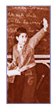
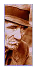

This is an archived copy of
History Matters
, provided by the
Roy Rosenzweig Center for History and New Media
. To explore this content in a new interface, visit
Who Built America?
.
Designed for high school and college teachers and students,
History Matters
serves as a gateway to web resources and offers
other useful materials for teaching U.S. history. (
more on this site
)
search this site

